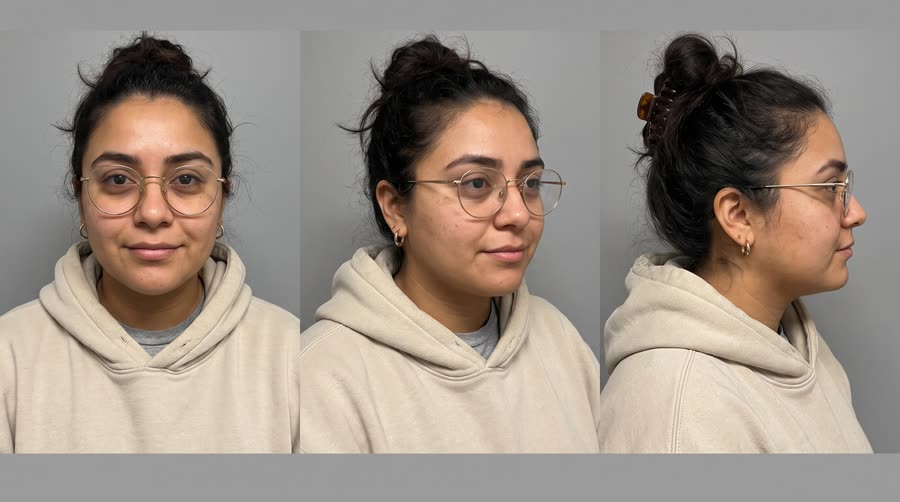
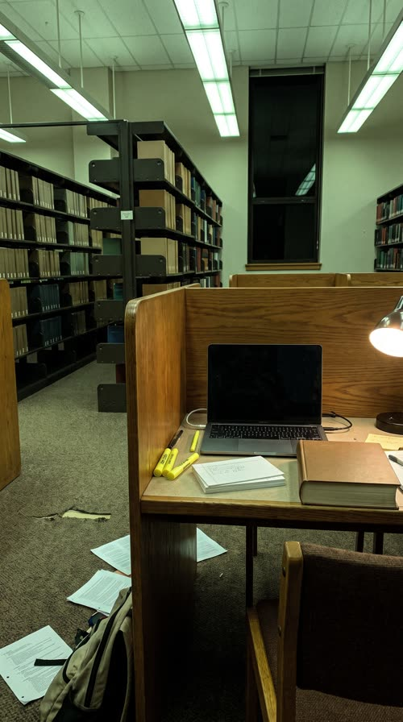

Finals Week
2am in the university library, seven hours before her final. A grad student films herself explaining why she swapped her sugary study drink for Red Bull Sugarfree, then proves it by the time the window goes blue.
The number one Instagram and TikTok ad format in 2026 (reported CTR 2.5 to 4 percent). It borrows peer trust: a person like the viewer, in a place like the viewer's, saying the thing a friend would say. The risk is polish: a 16B-impression study found ads that look AI-made lose CTR, so every frame must pass as an unedited phone clip.
Contact sheet
One keyframe per shot, with the caption as it will appear.


Cast and world

Voice: warm, fast, conspiratorial library half-whisper, dry humour, American West Coast

World. A study carrel on the quiet floor of the fictional Harlow Hall library at the fictional Eastbrook University, 2am to dawn during finals week. Fluorescent tubes, carpet, rows of plain shelves, a tall window behind her going from black to blue. Palette. No designed palette: greenish fluorescent white, laptop-screen blue on her face, oatmeal hoodie and faded navy. The silver and sky-blue can is the only saturated thing in the frame.
Fictional brands. Eastbrook University (only on her hoodie as a plain crest shape with no readable letters); Harlow Hall (library, never shown as text)
Beats
| Time | Beat | What happens |
|---|---|---|
| 0-2.4 | hook | Selfie at 2am with a text hook box; she whispers the stakes: exam at nine, and she is weirdly fine. |
| 2.4-4.6 | problem | Jump cut: the old way, sugary drinks last semester, never again. |
| 4.6-11.4 | product | She lifts the can to the lens, flips to the rear camera to crack it on the desk, sips, and names it with the one benefit. |
| 11.4-21.5 | proof | She says what it does for her, then a propped time-lapse from 2am to blue dawn shows her working through the cards. |
| 21.5-25.5 | payoff | Dawn selfie, cards fanned: chapter ten done, she feels ready. |
| 25.5-30 | cta | Can up beside her face to the lens: grab the silver can, and the tagline. |
Screenplay
61 spoken words in 30 s. Each line keeps its intent (fixed in the template) and its wording (written for this product).
| Time | Speaker | Line | Intent (template) |
|---|---|---|---|
| 0.3-2.3 | Dani | It's 2am, my exam's at nine, and I'm weirdly fine. half-whisper, quick, a little smug, leaning into the lens | Hook: the creator names the high-stakes moment and a surprising state she is in, so the viewer asks why. |
| 2.6-4.4 | Dani | Last semester I lived on the sugary stuff. Never again. eye-roll, deadpan, faster | Name the old habit the product replaces, without naming any rival. |
| 4.7-5.8 | Dani | So I swapped to this. bright, holding it up, like showing a friend | The swap: product enters the frame. |
| 8.2-11.2 | Dani | Red Bull Sugarfree. Same benefits as the original, just no sugar. right after a sip, clear and a touch slower on the name, a small nod · Say: RED BULL SHUG-er-free, three clear words | Product line: say the product name clearly and the one allowed benefit that answers the old habit. |
| 11.7-14.1 | Dani | It keeps me alert, and I'm actually focused. sincere, tapping the textbook, quieter | The specific benefit, in her own words, tied to the task in front of her. |
| 21.9-24.9 | Dani | Chapter ten, done. And I actually feel ready. tired, proud, a soft laugh, dawn light on her face | Payoff: proof the promise came true, in the creator's words. |
| 26.0-29.6 | Dani | Finals week? Grab the silver can. Wiiings without sugar. direct to lens, pointing the can at camera, grin on the tagline · Say: WINGS, stretch the vowel slightly | In-world CTA to the viewer in the same situation, then the tagline. |
Generation plan
U1 · 0 to 6.0 s · 6 s generation
Shots S01, S02, S03 · References: dani card, carrel plate, product can official, S01 keyframe as first frame
9:16 unedited smartphone front-camera selfie video, filmed by @Image1 (Dani) herself at arm's length at a university library study carrel at 2am, greenish fluorescent light and laptop glow on her face, plain shelves behind as in @Image2, phone sensor noise, small handheld wobble, not cinematic. Shot 1 (0 to 2.4 s): close-up, she leans into the lens and half-whispers, a little smug: "It's 2am, my exam's at nine, and I'm weirdly fine." Hard jump cut. Shot 2 (2.4 to 4.6 s): slightly wider, she rolls her eyes and does a flat chopping hand gesture, deadpan: "Last semester I lived on the sugary stuff. Never again." Hard jump cut. Shot 3 (4.6 to 6 s): she lifts the exact unopened can from @Image3 up beside her cheek, label flat to the lens, bright: "So I swapped to this." The phone is never visible. Native sound: library room tone, fluorescent hum, her voice slightly roomy on a phone mic. No music. No text on screen. No logos except the can.
U2 · 6.0 to 11.4 s · 6 s generation · exact-risk (short, cheap to re-roll)
Shots S04, S05 · References: product can official, dani card, S04 keyframe as first frame
9:16 unedited smartphone video in a library at 2am, phone noise, not cinematic. Shot 1 (0 to 2 s): handheld rear-camera view looking down at 45 degrees onto a cluttered study desk, the exact can from @Image1 stands upright, a hand pulls the ring tab: a crisp crack and fizz. Hard cut. Shot 2 (2 to 5.4 s): front-camera selfie close-up of @Image2 (Dani), she lowers the can from a sip and holds it steady at chin height, label flat to the lens, and says clearly, a touch slower on the name: "Red Bull Sugarfree (said RED BULL SHUG-er-free, three clear words). Same benefits as the original, just no sugar." Small nod. Keep the can's shape, colours, wordmark, two red bulls and gold sun exactly as @Image1, unmirrored. One can only. Native sound: the can crack, room tone, her voice. No music.
U3 · 11.4 to 25.5 s · 14 s generation
Shots S06, S07, S08, S09 · References: dani card, carrel plate, product can official, S06 keyframe as first frame
9:16 unedited smartphone video at a university library study carrel, phone noise, flat light, not cinematic. Shot 1 (0 to 3 s): front-camera selfie medium shot of @Image1 (Dani), she taps an open textbook with a highlighter, the opened can from @Image3 standing on the desk in the lower corner, sincere: "It keeps me alert, and I'm actually focused." Hard cut. Shot 2 (3 to 6.6 s): the phone is now propped on the carrel shelf, locked off, sped-up time-lapse: she writes and stacks index cards quickly, the can stays in the same spot by her elbow, the window behind her is black. Shot 3 (6.6 to 10 s): same locked angle, the time-lapse slows to real time as the window goes pale blue with dawn; she leans back and stretches both arms up; the card stack is tall. Hard cut. Shot 4 (10 to 14 s): front-camera selfie close-up in blue dawn light, she fans the stack of cards beside her cheek, tired and proud, soft laugh: "Chapter ten, done. And I actually feel ready." Cards have no readable writing. Location as @Image2. Native sound: highlighter tap, fast page flips, birds outside at dawn, her voice. No music.
U4 · 25.5 to 30 s · 5 s generation · exact-risk (short, cheap to re-roll)
Shots S10 · References: product can official, dani card, S10 keyframe as first frame
9:16 unedited smartphone front-camera selfie at a library carrel at dawn, pale blue window light, phone noise, not cinematic. @Image2 (Dani) grins into the lens, pushes the exact can from @Image1 toward the camera and holds it still beside her face, label flat to the lens, and says directly: "Finals week? Grab the silver can." then, with a grin: "Wiiings without sugar (WINGS, vowel stretched slightly)." The can does not bend, warp or change; keep its shape, colours, wordmark, two red bulls and gold sun exactly as @Image1. Keep the lower third clean. Native sound: room tone, birds, her voice. No music, no text.
Sound, music, voice, captions
| 0 to 30 s | creator bed | No composed score. Optional: a quiet lo-fi hip hop loop (dusty keys, soft kick, 82 bpm) sat very low under the voice, as a creator would add from a sound library; drop it out entirely for the brand line at 8.2 to 11.2 s so the name is clean. |
Added sound
- 6.6 s: can crack and fizz, close phone-mic character (the product moment must register; only added if the native crack is weak)
- 14.4 s: short time-lapse whoosh (tells the viewer hours have passed, the proof of the claim)
- Dani: native voice from U1; her U1 vocal stem as voice reference for U2, U3 and U4 so the whisper register stays the same
font: Montserrat ExtraBold (TikTok creator-caption look), size: 6% of frame height, color: #FFFFFF, active word: #FFE24A, the word currently spoken, no scaling pop, shadow: hard 5px black stroke plus 0 3px 0 rgba(0,0,0,.5), box: False, position: centre, 60% down the frame, clear of the chin and of the platform UI safe zone, max words on screen: 3, case: sentence case, no end punctuation, hook text: native TikTok-style white rounded box with black text, top 18% of frame, 0 to 3 s only, written like a post title in lower case, stickers: one timestamp sticker in the platform's own style for time passage, rendered in post
Post text- 0 to 3.0 s: finals week survival (2am edition) / (native TikTok-style hook box: white rounded rectangle, black Montserrat Bold, lower case, top 18% of frame, pops on at frame 1)
- 14.4 to 21.5 s: 2:14 am, then counts up fast to 6:02 am / (timestamp sticker in platform style, white text on a translucent dark pill, upper right, digits roll with the time-lapse)
- 27.6 to 30 s: Red Bull Sugarfree / Wiiings without sugar (creator-style end sticker, white rounded card in the lower third, Montserrat ExtraBold, slight tilt, pops on 6 frames)
Adaptation contract
How this same concept takes any physical product.
| Product type | Where it sits in the story | Scale |
|---|---|---|
| ingested | she cracks it and sips it at the carrel, then it sits in shot while she works | hand |
| applied | she applies it on camera at the carrel (lip balm, under-eye patch, hand cream) and says what it fixes | face or hand |
| worn | she pulls it on or points to it in the selfie (blue-light glasses, hoodie, compression socks, headphones) | body |
| handheld | she holds it up to the lens and then uses it at the desk (earbuds, pen, timer, phone stand) | hand |
| carried | she unzips it on the carrel to show what is inside (backpack, pencil case, laptop sleeve) | hand to lap |
| home | it is set up on the carrel or in her dorm desk corner (lamp, cushion, desk organiser, white-noise speaker) | desk |
| consumable | the pack she pulls from her bag every study night and uses on camera (snack, gum, supplement, refill) | hand |
Style bible
Look. Front-camera selfie at arm's length, face in the upper half of the frame with headroom cropped tight, eyes on the lens (not the screen). One real location per video, lived-in and a little messy. The product enters the frame by being held up to the lens, close and slightly too near, then sits in shot on the desk. B-roll is the creator flipping to the rear camera for a 1 to 3 s handheld insert. Jump cuts between takes change framing slightly (punch-in 10 to 20 percent) but never the location or light.
Camera. Phone front camera, about 24mm equivalent wide-angle, handheld with small natural wobble and one-handed reframes; propped-phone locked shots for any time-passage beat; rear-camera inserts close and handheld. No dolly, no gimbal, no crane, no rack-focus, no shallow cinema bokeh: phone depth of field keeps the background mostly readable (but blank).
Light and texture. Whatever the location gives: laptop-screen glow on the face, overhead fluorescents, a desk lamp. Slightly underexposed or blown in spots, auto white balance a touch off, no rim light, no key light setup. Phone sensor noise in the shadows, mild over-sharpening and HDR tone mapping typical of phone video, real skin with pores, under-eye shadows and flyaway hair, no retouching, no film grain, no halation, no colour grade.
Pacing. Text hook plus a spoken hook in the first 1.5 s, jump cut every 1.5 to 3.5 s, the product up to the lens by second 5, a held product beat of at least 2 s with the brand name, one propped time-lapse to prove the claim over time, then a direct-to-lens CTA. No breath of stillness: UGC never slows down.
Sound. Only the phone's own mic: voice slightly roomy, library or room tone, keyboard clicks, the can crack. Dialogue carries the whole ad. No score; at most a faint lo-fi bed at very low level added in post, the way creators add a trending sound.
Known failures.
- the model draws the phone in her hand when we are meant to be looking through it: say the phone is not visible because we are seeing through its front camera
- images come back as polished portraits with bokeh and rim light, which reads as AI and kills clicks: ask for phone noise, flat room light, amateur framing and 'not cinematic'
- laptop screens and index cards grow readable text: show the laptop from behind or as a plain glow, cards blank with faint pencil lines only
- the can held close to a wide front lens bulges or bends: keep it 30 cm or more from the lens, upright, label flat to camera
- library shelves sprout readable book spines and signs: say spines are plain coloured with no lettering and signs are blank
- a second can appears on the desk in later shots: say one can only, the same opened can
- cast card reads as a glossy headshot: add phone-photo realism to the card prompt so identity matches the selfie frames
- mirror flip: a front camera shows text mirrored in real life, so keep the can's label unmirrored and exactly as the reference
- hands hold the can with too many or fused fingers at close range: say one hand, four fingers wrapped behind the can, thumb in front on the silver side
- casting drifts pale: 'Mexican American' alone came back reading as a light-skinned European woman; state skin tone plainly ('clearly warm tan-brown skin, not pale') on the card, and everything downstream follows the card
- night scenes drift to daylight once a window is in frame: say every window is pitch black and name the only light sources
- when the can shares the frame with the face, the model spends its attention on the can and swaps the face for a generic one or turns her to profile: restate the card's key identity traits inline and say face straight on to the lens
Claims and cost
Claims used (all from the product page): Same benefits of the original Energy Drink, without sugar; Caffeine helps to improve concentration and increase alertness; Wiiings without sugar (tagline)
Video estimate: 31 s of generation at $0.27/s = $8.37 first pass, $18 to 26 with retakes, plus about $0 music.